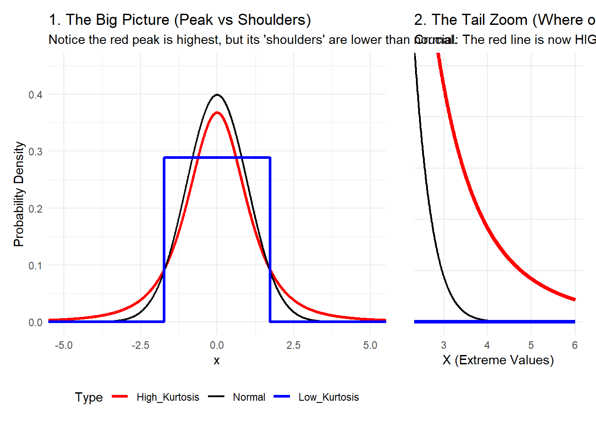

library(tidyverse)── Attaching core tidyverse packages ──────────────────────── tidyverse 2.0.0 ──
✔ dplyr 1.1.4 ✔ readr 2.1.6
✔ forcats 1.0.1 ✔ stringr 1.6.0
✔ ggplot2 4.0.1 ✔ tibble 3.3.0
✔ lubridate 1.9.4 ✔ tidyr 1.3.2
✔ purrr 1.2.0
── Conflicts ────────────────────────────────────────── tidyverse_conflicts() ──
✖ dplyr::filter() masks stats::filter()
✖ dplyr::lag() masks stats::lag()
ℹ Use the conflicted package (<http://conflicted.r-lib.org/>) to force all conflicts to become errorslibrary(patchwork) # Great for combining plots
# --- DATA GENERATION ---
# We create a sequence of X values
x_seq <- seq(-6, 6, length.out = 2000)
# Create a data frame with three different densities
df_kurtosis <- data.frame(x = x_seq) |>
mutate(
# Reference: Standard Normal (Mesokurtic)
Normal = dnorm(x, mean = 0, sd = 1),
# High Kurtosis (Leptokurtic): Using a t-distribution with low df
# t-dist has heavier tails than normal.
High_Kurtosis = dt(x, df = 3),
# Low Kurtosis (Platykurtic): Using a bounded distribution approach
# A uniform distribution is the extreme version of low kurtosis.
# To make it look comparable, we use a wider normal and truncate it,
# or simply use a uniform density scaled to match roughly.
# A simpler visual proxy for platykurtic is a low-variance uniform:
Low_Kurtosis = dunif(x, min = -sqrt(3), max = sqrt(3))
) |>
# Reshape for ggplot
pivot_longer(cols = -x, names_to = "Type", values_to = "Density") |>
mutate(Type = factor(Type, levels = c("High_Kurtosis", "Normal", "Low_Kurtosis")))
# --- PLOT 1: THE BIG PICTURE ---
p1 <- ggplot(df_kurtosis, aes(x = x, y = Density, color = Type, size = Type)) +
geom_line() +
scale_color_manual(values = c("red", "black", "blue")) +
scale_size_manual(values = c(1.2, 0.8, 1.2)) +
theme_minimal() +
labs(title = "1. The Big Picture (Peak vs Shoulders)",
subtitle = "Notice the red peak is highest, but its 'shoulders' are lower than normal.",
y = "Probability Density") +
theme(legend.position = "bottom") +
coord_cartesian(xlim = c(-5, 5), ylim = c(0, 0.45))
# --- PLOT 2: THE TAIL ZOOM ---
# We use the exact same data, just zoom the coordinates
p2 <- ggplot(df_kurtosis, aes(x = x, y = Density, color = Type, size = Type)) +
geom_line() +
scale_color_manual(values = c("red", "black", "blue")) +
scale_size_manual(values = c(1.5, 0.8, 1.5)) + # Thicker lines for emphasis
theme_minimal() +
# IMPORTANT: The zoom focus areas
coord_cartesian(xlim = c(2.5, 6), ylim = c(0, 0.025)) +
labs(title = "2. The Tail Zoom (Where outliers live)",
subtitle = "Crucial: The red line is now HIGHER than the others.",
y = "", x = "X (Extreme Values)") +
theme(legend.position = "none",
axis.text.y = element_blank(),
panel.grid.minor = element_blank())
# --- COMBINE WITH PATCHWORK ---
final_plot <- p1 + p2 + plot_layout(widths = c(2, 1))
print(final_plot)Warning: Using `size` aesthetic for lines was deprecated in ggplot2 3.4.0.
ℹ Please use `linewidth` instead.